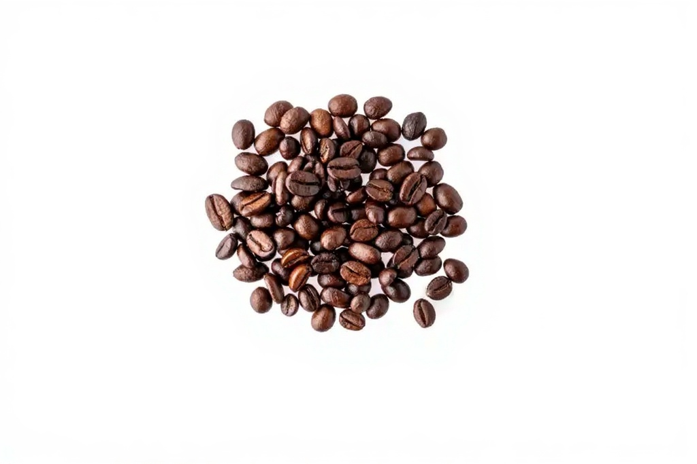

Compare Arabica and Robusta coffee for buyers, including flavor profiles, growing conditions, market demand, commercial uses and sourcing recommendations. International buyers evaluating Cameroon origin need more than general background. They need a practical understanding of how sourcing, quality control, documentation, packaging, payment, and logistics connect in a real export workflow.
This guide is written for procurement teams, roasters, chocolate makers, processors, importers, and trade partners comparing suppliers across Africa. It explains the buyer-side decisions that shape successful transactions and shows where COCOABRIDGE can support commercial sourcing from Cameroon.


Key Buyer Takeaways
- Define the specification before negotiating price.
- Confirm quality checks, packaging, documentation, and logistics early.
- Use samples and written records to reduce first-order risk.
- Choose an origin partner that can connect sourcing with export execution.
1. Define the coffee program before asking for price
Coffee buyers should begin with the intended use: specialty roasting, commercial blends, espresso, soluble coffee, private label, or trading inventory. That use case determines whether Arabica or Robusta is appropriate, which grade is realistic, how samples should be evaluated, and how much consistency is required. Price without specification is not a reliable basis for international coffee procurement.
For international B2B buyers, this point should be reviewed in writing because small assumptions can become expensive during customs clearance, payment release, or destination receiving. A buyer that documents requirements early gives the exporter a better chance to prepare the right lot, the right document file, and the right shipment plan.
Buyer recommendation
Ask for evidence that matches your purchasing risk: sample details, lot notes, packaging plan, expected documents, shipment timeline, and the person responsible for communication. These records do not eliminate every risk, but they make the trade more transparent and easier to manage.
2. Understand origin, processing, and cup expectations
Coffee quality is shaped by growing area, altitude, variety, processing method, drying, storage, and export handling. Arabica buyers may focus on acidity, aroma, sweetness, and cup clarity. Robusta buyers may prioritize body, caffeine strength, crema, and cost efficiency. The supplier should explain how the offered lot matches the buyer’s commercial objective.
For international B2B buyers, this point should be reviewed in writing because small assumptions can become expensive during customs clearance, payment release, or destination receiving. A buyer that documents requirements early gives the exporter a better chance to prepare the right lot, the right document file, and the right shipment plan.
Buyer recommendation
Ask for evidence that matches your purchasing risk: sample details, lot notes, packaging plan, expected documents, shipment timeline, and the person responsible for communication. These records do not eliminate every risk, but they make the trade more transparent and easier to manage.
3. Check moisture, defects, and physical grading
Moisture content affects storage stability and shipment risk. Defect levels influence cup quality, roasting behavior, and buyer acceptance. Physical grading can include screen size, broken beans, black beans, sour beans, insect damage, foreign matter, and odor. Buyers should ask for a quality summary and should evaluate samples before committing to bulk supply.
For international B2B buyers, this point should be reviewed in writing because small assumptions can become expensive during customs clearance, payment release, or destination receiving. A buyer that documents requirements early gives the exporter a better chance to prepare the right lot, the right document file, and the right shipment plan.
Buyer recommendation
Ask for evidence that matches your purchasing risk: sample details, lot notes, packaging plan, expected documents, shipment timeline, and the person responsible for communication. These records do not eliminate every risk, but they make the trade more transparent and easier to manage.
4. Choose packaging that protects green coffee
Green coffee packaging must protect quality during inland transport, port handling, ocean transit, and destination storage. Bag type, bag weight, markings, palletization, liner use, and container condition should be discussed according to buyer requirements. Packaging decisions influence both quality preservation and warehouse receiving efficiency.
For international B2B buyers, this point should be reviewed in writing because small assumptions can become expensive during customs clearance, payment release, or destination receiving. A buyer that documents requirements early gives the exporter a better chance to prepare the right lot, the right document file, and the right shipment plan.
Buyer recommendation
Ask for evidence that matches your purchasing risk: sample details, lot notes, packaging plan, expected documents, shipment timeline, and the person responsible for communication. These records do not eliminate every risk, but they make the trade more transparent and easier to manage.
5. Prepare export documents and compliance records
Coffee shipments may require commercial invoice, packing list, certificate of origin, phytosanitary certificate, quality or inspection documents, and transport documents. Importers should also confirm any destination-market requirements before shipment. The best time to align compliance is before the contract is finalized, not after the container has been loaded.
For international B2B buyers, this point should be reviewed in writing because small assumptions can become expensive during customs clearance, payment release, or destination receiving. A buyer that documents requirements early gives the exporter a better chance to prepare the right lot, the right document file, and the right shipment plan.
Buyer recommendation
Ask for evidence that matches your purchasing risk: sample details, lot notes, packaging plan, expected documents, shipment timeline, and the person responsible for communication. These records do not eliminate every risk, but they make the trade more transparent and easier to manage.
6. Plan international logistics with realistic lead times
Export logistics includes sample movement, lot preparation, bagging, container booking, stuffing, customs processing, port delivery, vessel departure, and document release. Buyers should build realistic lead times and communicate deadline-sensitive requirements early. A reliable exporter keeps the buyer informed when carrier schedules or local handling timelines change.
For international B2B buyers, this point should be reviewed in writing because small assumptions can become expensive during customs clearance, payment release, or destination receiving. A buyer that documents requirements early gives the exporter a better chance to prepare the right lot, the right document file, and the right shipment plan.
Buyer recommendation
Ask for evidence that matches your purchasing risk: sample details, lot notes, packaging plan, expected documents, shipment timeline, and the person responsible for communication. These records do not eliminate every risk, but they make the trade more transparent and easier to manage.
7. Build long-term supplier relationships
Coffee buyers benefit from suppliers who understand repeat specifications, seasonal availability, quality feedback, and shipment performance. Long-term relationships make it easier to plan samples, reserve lots, improve consistency, and align packaging or documentation preferences. COCOABRIDGE supports buyers seeking structured Arabica and Robusta sourcing from Cameroon.
For international B2B buyers, this point should be reviewed in writing because small assumptions can become expensive during customs clearance, payment release, or destination receiving. A buyer that documents requirements early gives the exporter a better chance to prepare the right lot, the right document file, and the right shipment plan.
Buyer recommendation
Ask for evidence that matches your purchasing risk: sample details, lot notes, packaging plan, expected documents, shipment timeline, and the person responsible for communication. These records do not eliminate every risk, but they make the trade more transparent and easier to manage.
How COCOABRIDGE supports buyers
COCOABRIDGE connects origin sourcing with export execution for international buyers seeking cocoa, Arabica coffee, Robusta coffee, and agricultural commodity services from Cameroon. Buyers can review our premium cocoa and coffee products, compare our agricultural export services, learn about the company on the about page, or contact the export desk through the contact page.
For commercial inquiries, include the commodity, grade, target quantity, destination port, Incoterm, packaging needs, sample expectations, and preferred payment structure. Buyers seeking Cameroon coffee beans can also visit the Arabica coffee supplier page for dedicated sourcing information.
Need a Cameroon export partner for your next order?
Send your specification and destination requirements to COCOABRIDGE. Our export desk will review availability, quality expectations, documentation needs, and the next commercial step.
Frequently Asked Questions
Why does arabica vs robusta coffee matter to buyers?
It helps buyers reduce quality, documentation, logistics, and supplier-selection risk before committing to international agricultural commodity purchases.
What should buyers ask COCOABRIDGE before ordering?
Buyers should share target commodity, grade, volume, destination port, Incoterm, packaging preference, sample requirements, and expected shipment timing.
Can COCOABRIDGE support export documentation?
Yes. COCOABRIDGE supports commercial, origin, phytosanitary, packing, quality, and shipment documentation according to the agreed export structure.
Are samples available before bulk purchases?
Qualified buyers can request samples when availability, courier arrangements, destination requirements, and commercial intent have been confirmed.